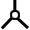

Speaking Ouwi
So how do you pronounce all these symbols?
General Framework
- Each of the ten 'non-linear' symbols/letters represents a vowel.
1 2 3 4 5 6 7 8 9 10 
 


o /ou/ ou /ø/ a /ɑ/ uh /ʌ/ i /ɪ/ uu /u:/ e /e/ ы /ɨ/ aa/ɛ/ ee /i/ - Each way that two vowels can connect is represented by a certain consonant.
- Non-'foreign' speech is spoken in monosyllabic units with the consonant in between representing the connection between each vowel.
- 'Foreign' words (in the spaces, etc) are prefixed by a dipthong (the second consonant in the dipthong is the beginning of the foreign word). The first consonant may be partially dependent on which 'space' the word is in and also an appropriate match for making the dipthong with the second letter. The pairings can also help distinguish different consonants that may sound similar.
- The first syllable of the 'foreign' word is stressed. Or maybe it should be tail-stressed so both ends are demarcated?
- When not an english word or a fundamental story-word, native words should be a consonant pair/triplet like semitic languages, perhaps.
Consonant Connections
| # | Connection | Example | Used with which vowels | Pronounced |
| 1 | foreign above | 1,2,4,8,9; | l | |
| 2 | foreign below | 1,2,4,8,9; | v | |
| 3 | serial forward | universal; | ':[6,7], th:[2,3,8,9] | |
| 4 | serial backward | universal; | dh | |
| 5 | serial, third | just 2; | z | |
| 6 | radiating from a space (1) | 2li=all vowels with 2+ legs; | t:[9,7], d:[2,8,10] | |
| 7 | rs 2 |  | tli=all vowels with 3+ legs; | s:[1,7,10], z:[1,3] |
| 8 | rs 3 | (1,2,4),8,9; | v | |
| 9 | rs 4 | (1,2,4),8,9; l goes with m | l | |
| 10 | rs 5 | just 10 | vr | |
| 11 | intersecting passive (1) | universal; | g | |
| 12 | ip 2 | 2li; dne for 6,8,9,10--maybe same as one of #13-#16 | ch | |
| 13 | ip 3 | tli; | sh | |
| 14 | ip 4 |  | tli; | j |
| 15 | ip 5 | just 10; | ch | |
| 16 | ip 6 | just 10; | ng | |
| 17 | intersecting active (1) | 2li; | p:[7,9], b:[2,3] | |
| 18 | ia 2 | tli; | k | |
| 19 | ia 3 | just 10; | kh | |
| 20 | ia 4 | just 10; | q | |
| 21 | double intersection (1) | 2li; | pr | |
| 22 | di 2 | tli; | kr | |
| 23 | di 3 | 2li; | w | |
| 24 | di 4 | tli; | r | |
| 25 | di double middle | tli; | rch | |
| 26 | di w/active middle intersection (1) | tli; | rk | |
| 27 | di mi 2 | tli; | rp | |
| 28 | passive radiation (1) |  | 2li; | h:[7], f:[1,2,3,5,10] |
| 29 | pr 2 | tli; | rl | |
| 30 | pr 3,4--is this allowed? | |||
| 31 | pr 5 | 10 only; | rv | |
| 32 | passive intersect by 10 | 2li; | y | |
| 33 | reconnector | universal; | m:[2,6,8], n:[1,3,5,9.10] |